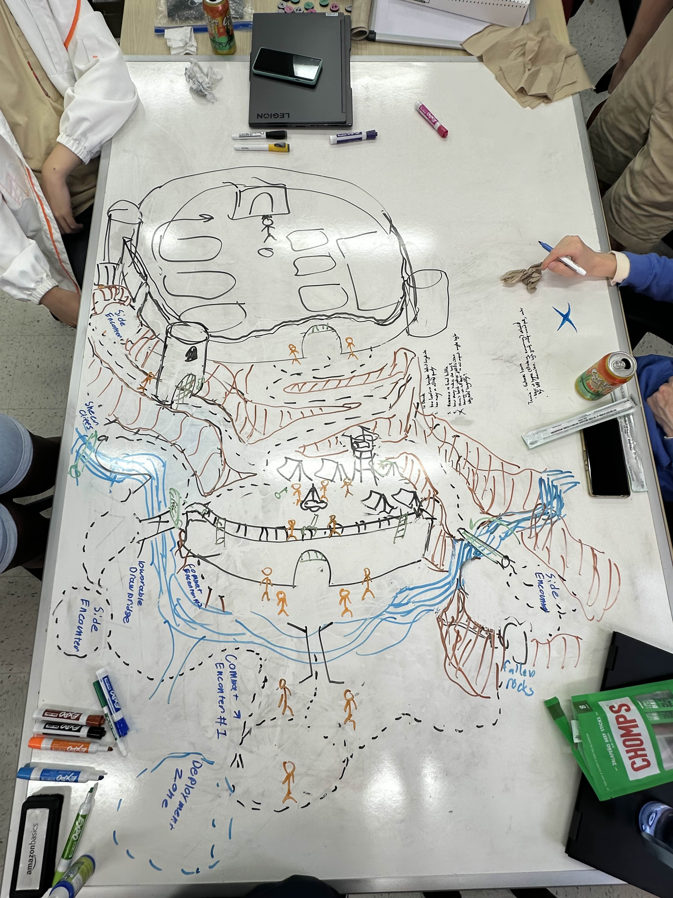
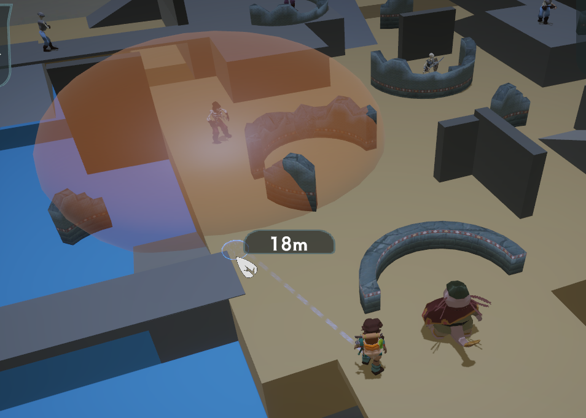
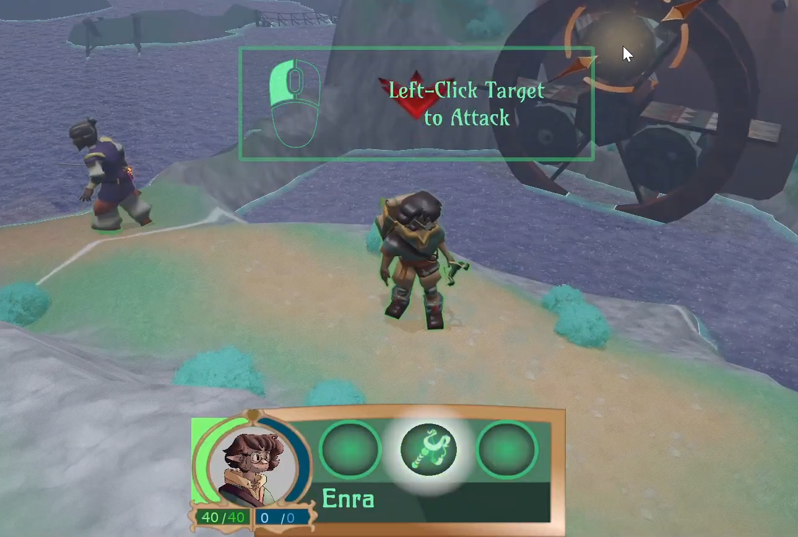

August 2024 - Present
Role: Designer
Unchained: Tale of Enra is a tactical RPG that reimagines traditional turn-based combat by introducing a unique 'Negotiation' system. Players can choose to either defeat their enemies using traditional tactical combat AND/OR by convincing them to lay down their arms via breaking their Resolve with non-violent means. Each approach offers different rewards and different methods of success, impacting the protagonists' development and choices in the narrative.
This game was originally created as a Capstone project in the USC Games program using Unity, and has since expanded beyond that to further explore its potential after winning awards at the 2025 USC Games Expo. It is currently still in development.
Contributions


Early Development
Negotiation System
 Throughout development, I worked with designers to iterate on the system. It led to many prototypes and different versions of the UI. Extensive playtesting in early development was essential in refining the system.
Throughout development, I worked with designers to iterate on the system. It led to many prototypes and different versions of the UI. Extensive playtesting in early development was essential in refining the system.
Enemy AI
Usability
Level and Conflict Design

{kind=link}
{kind=link}
{kind=link}